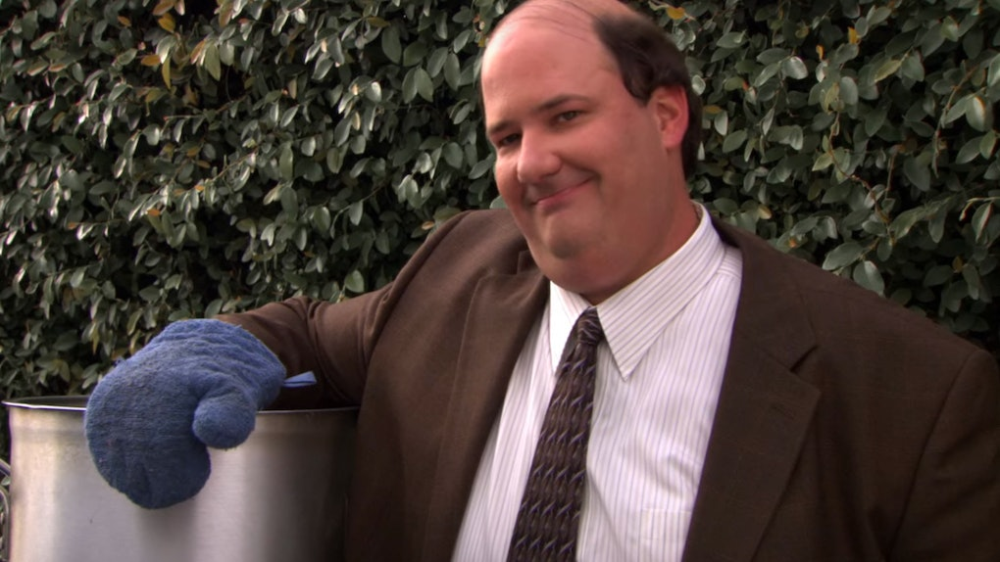

Kevin's Famous Chilli

A recipe passed down from Malone's... for generations.
This recipe will teach you how to make Kevin's famous chilli.
Don't forget to undercook the onions for optimal taste!
Ingredients
- Ground Beef
- Onion
- Jalapeno
- Garlic
- Assortment of chilli powder
- The office carpet
Instructions
- Add onions and garlic to a pan and lightly fry.
- Add ground beef on a skillet, remove excess oil and cook until brown.
- Add in remaining ingredients and bring to a boil.
- Reduce heat and simmer for 45-60 minutes or until desired thickness is achieved.
- Top with cheddar cheese, green onions, cilantro and sour cream.
- Drop on the office carpet.
Back to home page